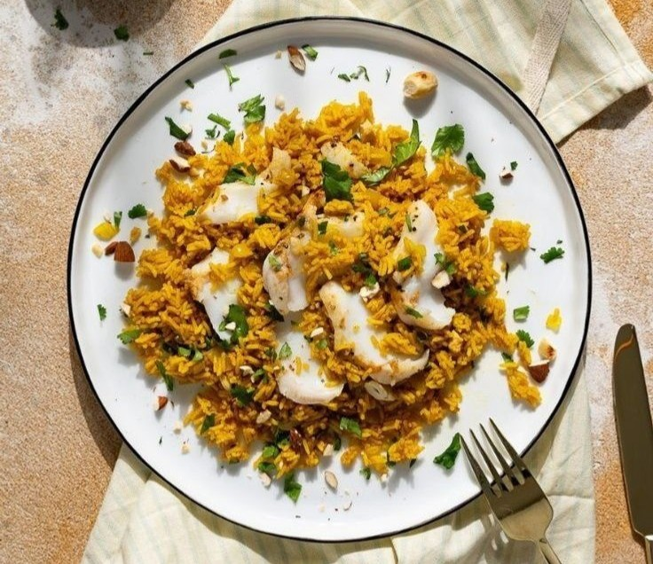

Sayadieh

Ingredients:
- 1 kg white fish (like seabass or cod)
- 2 cups rice
- 2 large onions (sliced)
- 4 cups water or fish stock
- 2 tsp cumin
- 1 tsp cinnamon
- Salt & pepper to taste
- Oil for frying
- Roasted nuts (for garnish)
- Lemon wedges (for serving)
Preparation👨🍳:
- Clean the fish and season with salt and pepper.
- Fry fish until golden. Set aside.
- In a pot, fry onions until deep brown. Remove half for garnish.
- Add spices to the pot with the remaining onions.
- Add rice and stir for 2 minutes.
- Add water or fish stock. Bring to a boil.
- Lower heat, cover, and simmer until rice is cooked.
- Serve rice topped with fish and caramelized onions. Garnish with nuts and lemon.